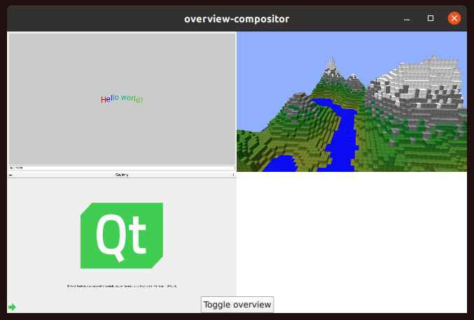

Qt Wayland Compositor Examples - Overview Compositor
Overview Compositor shows how to switch between clients in a grid.
Introduction
Overview Compositor demonstrates selecting and activating an application from a grid of currently connected clients.

For an introduction to the basic principles of creating a Qt Wayland Compositor with Qt, see the Minimal QML example.
Application Grid
In this example, the compositor supports two different modes of operation:
- A fullscreen mode, where a single application window occupies the whole compositor window and is interactable.
- An overview mode, where all application windows are visible in a grid. Clicking on a window in the grid causes it to be selected. The compositor enters fullscreen mode, showing the selected application window.
When a client connects to the compositor and creates a top-level surface, the surface will be connected to a shell extension. The example only supports the XdgShell extension, so the client will connect to this.
XdgShell { onToplevelCreated: { toplevels.append({xdgSurface}); toplevel.sendFullscreen(Qt.size(win.pixelWidth, win.pixelHeight)); } }
For each surface, we tell the client to configure it as fullscreen. In addition, the surfaces are added to a ListModel for easy access.
This model is used by a Repeater to create ShellSurfaceItems inside a Grid. The Grid component positions the items in a grid.
Repeater { model: toplevels Item { width: win.width height: win.height ShellSurfaceItem { anchors.fill: parent shellSurface: xdgSurface onSurfaceDestroyed: toplevels.remove(index) } MouseArea { enabled: grid.overview anchors.fill: parent onClicked: { grid.selected = index; grid.overview = false; } } } }
For each of the items, we create a MouseArea which covers the item and intercepts all mouse and touch input. This is only active when the compositor is in overview mode, and activates the application that was clicked.
When the compositor goes into fullscreen mode, the same Grid component is used, but is scaled and translated into a position where the single selected cell fills the compositor's window. The idea is to "zoom in" on the selected cell, allowing the user to interact with the application it contains.
transform: [ Scale { xScale: grid.overview ? (1.0/grid.columns) : 1 yScale: grid.overview ? (1.0/grid.columns) : 1 Behavior on xScale { PropertyAnimation { easing.type: Easing.InOutQuad; duration: 200 } } Behavior on yScale { PropertyAnimation { easing.type: Easing.InOutQuad; duration: 200 } } }, Translate { x: grid.overview ? 0 : win.width * -grid.selectedColumn y: grid.overview ? 0 : win.height * -grid.selectedRow Behavior on x { PropertyAnimation { easing.type: Easing.InOutQuad; duration: 200 } } Behavior on y { PropertyAnimation { easing.type: Easing.InOutQuad; duration: 200 } } } ]
At the bottom side of the window, there is a button which toggles between the modes. This can be used to bring back the application grid while the compositor is in fullscreen mode.
This example shows one way to have the compositor visualize clients in different modes. Another way to achieve similar effects is to create multiple Qt Quick items that refer to the same surface. See the Multi Output example for a demonstration.